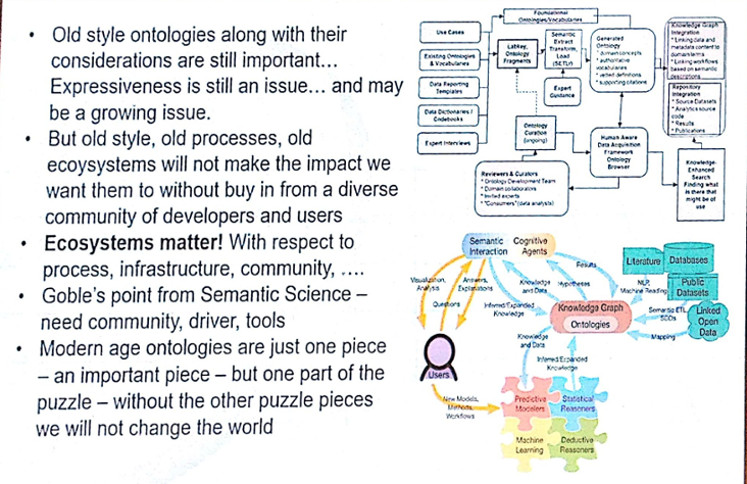
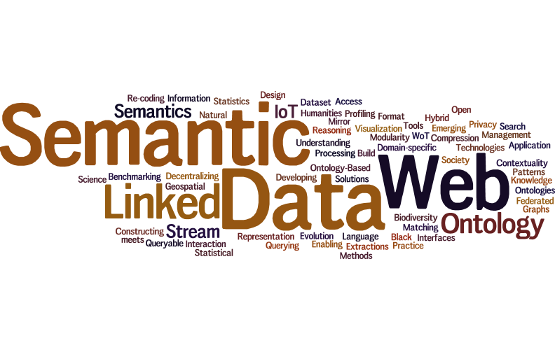
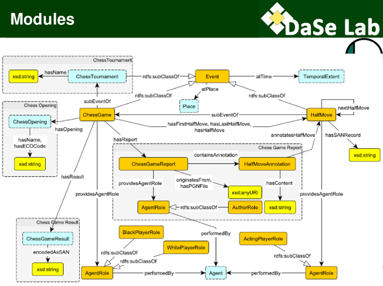
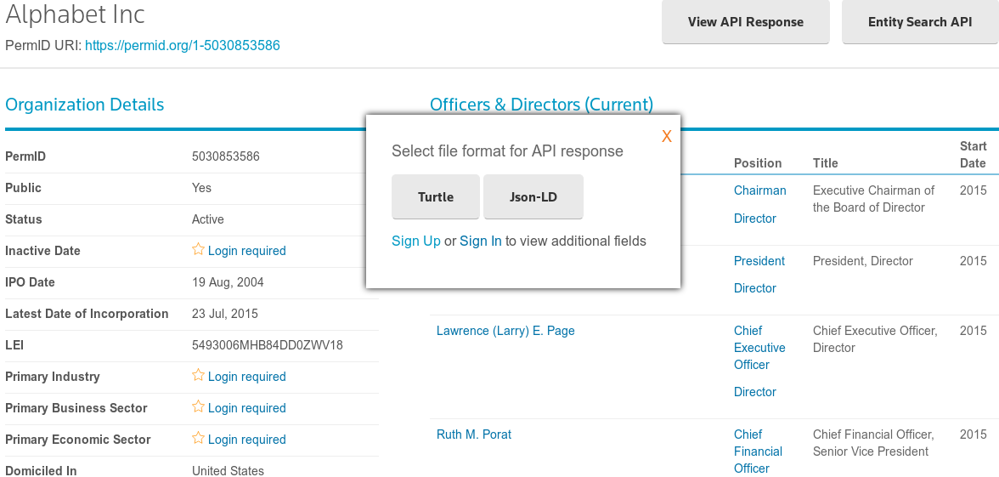

"It takes a village." Deborah L. McGuinness
Collaboration between the specialists is required to complete a successful project.
Impact requires buy in from diverse fields.
- Domain experts becoming more involved.
- Knowledge Engineers creating more tools than ontologies.

Relational and Semantic Data Mining
Nada Lavrač
From data mining to knowledge mining the web, the aim is to be fast and informative.
(Includes background knowledge)
- Choosing data: Estimating relevance, filtering by page rank.
- Methods: 1-to-many data mining, data flattening, data fusion, wordification.
- Implemented and shared with ClowdFlows
Jamie Taylor
Encoding the real world:
- History
- Relational Database wasn't good enough, therefore ontologies (Knowledge Graphs).
- Consider DBpedia, Freebase etc. as preliminary exploration.
- "Knowledge Graph" not
"oncology" "ontology" (Capsenta)
- Challenges
- Managing identity is hard
- Ontology quality is important and difficult
- Semantic Modelling is hard
- 15% Google searches/day are new
- "A little semantics goes a long way" ? (Hendler)
- Future
- What is the ROI for semantics? "A little semantics goes a long way." J. Hendler
- Need to encode
common important sense, the kind of things that aren't noted:
- Polio Vaccine: prevents Polio
- Oven: heat
- Chair: sit
- Plane: fly
- {Concept: verb}
(NLP from dictionaries as a starting point)
- Result
- Purpose of objects encoded (important sense).
- An API for the world.
- High quality data should outlive us.
Workshops and Tutorials
WOP: Ontology Design and Patterns & WOMoCoE: Ontology Modularity, Contextuality, and Evolution
VIOLA: Visualization and Interaction for Ontologies and Linked Data
Not attended: Ontology Matching, Constructing Domain-specific Knowledge Graphs, Semantic Web meets IoT and WoT, Semantic Web Technologies for IoT, Queryable Compression Format for Linked Data, Semantic Data Management in Practice, Hybrid Statistical Semantic Understanding and Emerging Semantics, Benchmarking Linked Data, Enabling Open Semantic Science, Representation and Querying for Linked Geospatial Data, Decentralizing the Semantic Web, Natural Language Interfaces for the Web of Data, Linked Data for Information Extractions, Methods and Tools for Developing Ontology-Based Data Access Solutions, Humanities in the Semantic Web, Society, Privacy and the Semantic Web, How to Build a Stream Reasoning Application, Web Stream Processing, Semantic Statistics, Dataset Profiling and Federated Search for Web Data, Re-coding Black Mirror, Semantics for Biodiversity.
Workshop and Tutorial Wordcloud

Both keynotes delivered by Pascal Hitzler on Modular Ontologies and Ontology Design Patterns.
Definitions - Motivation - Challenges
WOP Talks
WOMoCoE Talks
Definitions - Motivation - Challenges
Modules: part of an ontology that corresponds
to a conceptual part of the domain which can
be summarised under one (key) notion within
the topic domain. Differ from namespaces: they can nest and overlap.
Ontology Design Pattern: a modelling solution to a recurring ontology design problem. Ideally a "best-practice" for a given problem.
Definitions - Motivation - Challenges

Definitions - Motivation - Challenges
- Lack of reuse of ontologies and linked data. Maybe because they are hard to read and understand. Need to focus on human understanding via tools.
- Experts think about their domains in terms of modules, not short axioms. Removing modules from an ontology is removing information.
- State-of-the-art methods for linking ontologies barely out-perform linguistic methods, encoding extra module information could help.
Definitions - Motivation - Challenges
- How should modules be encoded?
- Need for quality repositories of ODPs.
- No tool support: hope for visual tool used by DE, allowing KE to add detail.
- Benefits untested: Sharing, Integration and Reuse.
- No existing data on semantic web technologies uses or benefits.
- J.Cuenca, F.Larrinaga, E.Curry: A Unified Semantic Ontology for Energy Management Applications
Network ontology linking existing energy ontologies for interoperability. N-ary ODP.
- D.Lembo, R.Rosati, V.Santarelli, D.Savo, E.Thorstensen: Mapping Repair in Ontology-based Data Access Evolving Systems
Ontology-based data access, broken mapping. Repair based on minimum change.
- F.Burgstaller, C.Schütz, B.Neumayr, D.Steiner, M.Schrefl: Towards Contextualized Rule Repositories for the Semantic Web
An application of rules for Notice To Airmen.
- A.Zimmermann, J.Giménez-García: Contextualizing DL Axioms: Formalization, a New Approach, and Its Properties
Adding context to DL with annotations, NDTerms (NDFluents) approach: CA = {validity(a, t), Interval(t) from(t, 609BC), to(t, 539BC)}
PermID Thomson Reuters ClowdFlows

RESTFUL API, no SPARQL endpoint. Runs on CM-Well.
spouse(taylor, burton)@[start: 1975, location: Montreal end: 1976]
- Increases computational complexity but improves reasoning over OWL hack method.
FUNCTION us:status(?x) {
IF (EXISTS { ?x ex:hasSpouse ?y } ||
EXISTS { ?y ex:hasSpouse ?x },
ex:Married,
ex:Single) }
Programming with Semantics
scripting language based on SPARQL
SELECT ?title ?genre ?runtime WHERE {
?s a :film . ?s :title ?title .
?s :genre ?genre . ?s :runtime ?runtime .
}
PREFER (?title1 ?genre1 ?runtime1)
TO (?title2 ?genre2 ?runtime2)
IF (?genre1 = ?genre2 && ?runtime1 > ?runtime2)
Much less verbose than just SPARQL
(GROUP_BY ∧ ORDER_BY)
- Entity Comparison in RDF Graphs Petrova, A., et al.
-Using queries to find deep relationships
Brad Pitt and Tom Cruise both had spouses that were actresses and formally married to musicians.
in Monterey, California, USA